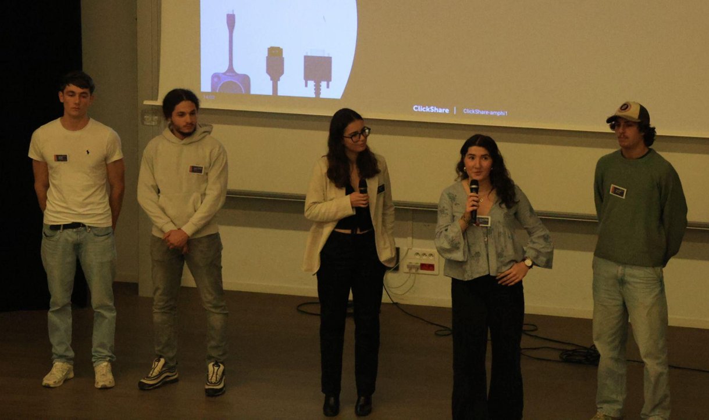
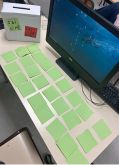
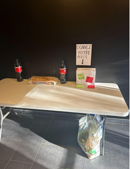

Dans le cadre de ma formation en BUT Villes et Territoires Durables, j’ai participé à l’édition 2024 du Festival des Solidarités, plus communément appelé FESTISOL. Cet événement national, organisé chaque année dans de nombreux territoires, rassemble associations, collectivités, établissements scolaires et citoyens autour d’actions visant à promouvoir la solidarité, la justice sociale et l’engagement citoyen. Pendant plusieurs semaines, des milliers d’initiatives sont organisées en France afin de sensibiliser le public à différentes problématiques sociales, culturelles et internationales.
Dans ce contexte, j’ai intégré la commission « Évasion culturelle », dont la thématique portait sur l’accès à la culture en milieu carcéral. Ce sujet, encore peu abordé dans l’espace public, interroge la place de la culture dans le processus de réinsertion des personnes détenues. L’objectif de notre commission était de sensibiliser différents publics à cette question, tout en créant des espaces de discussion et de réflexion autour du rôle que peut jouer la culture dans la reconstruction personnelle et sociale des personnes incarcérées.
Le projet FESTISOL s’est construit sur près d’une année de travail collectif. Au sein de notre commission composée de plusieurs étudiants, nous avons imaginé et organisé différentes actions de sensibilisation destinées à toucher des publics variés : étudiants, lycéens et grand public. Cette démarche s’inscrivait dans les objectifs du Festival des Solidarités, qui vise notamment à informer sur les enjeux de solidarité, à valoriser la diversité des acteurs engagés et à encourager les dynamiques collectives entre citoyens et institutions.
Pour comprendre l’organisation et la préparation de ces actions, il est possible de consulter la feuille de route détaillée du projet, qui présente la répartition des rôles, les objectifs de chaque intervention et le déroulement des différentes actions mises en place par notre commission.
Consulter la feuille de route du projet FESTISOL :
→ Document : Feuille de route Évasion culturelle FESTISOL
Comprendre la thématique : l’accès à la culture en milieu carcéral
Le choix de notre thématique s’inscrit dans une réflexion plus large sur les droits culturels et la réinsertion des personnes détenues. La culture peut jouer un rôle essentiel dans le processus de reconstruction personnelle, en permettant aux individus de s’exprimer, de développer leur créativité et de maintenir un lien avec la société. Dans le contexte carcéral, l’accès à la culture peut prendre différentes formes : ateliers artistiques, cinéma, théâtre, lecture ou encore projets audiovisuels.
Notre commission souhaitait montrer que la culture peut constituer un véritable levier de transformation personnelle et sociale, même dans un environnement contraint comme celui de la prison. À travers nos différentes actions, nous avons cherché à déconstruire certains préjugés et à ouvrir le débat sur la place de la culture dans les politiques de réinsertion. Cette réflexion s’appuyait notamment sur des témoignages d’acteurs directement impliqués dans ces démarches, comme d’anciens détenus ou des intervenants associatifs travaillant en milieu carcéral.
Une première immersion dans le milieu carcéral : la prison de Gradignan
Dans le cadre de ce projet, nous avons eu l’opportunité de nous rendre à la prison de Gradignan afin de mieux comprendre la réalité du milieu carcéral et les dispositifs culturels qui y sont mis en place. Cette intervention a été rendue possible grâce à la collaboration avec Sarah Erasmi, membre de l’association France Amérique Latine, qui intervient régulièrement en détention dans le cadre d’ateliers culturels et cinématographiques.
Lors de cette visite, deux membres de notre commission ont participé à un atelier ciné-débat organisé avec trois mineurs détenus. Cette rencontre a été l’occasion d’échanger directement avec eux sur leur quotidien, leurs conditions de détention et les activités culturelles auxquelles ils ont accès en prison. Les discussions ont permis de mieux comprendre l’importance que peuvent avoir ces dispositifs culturels pour rompre l’isolement, favoriser l’expression personnelle et maintenir un lien avec le monde extérieur.
Cette immersion a également permis de découvrir le fonctionnement spécifique du quartier des mineurs, qui diffère du régime de détention des adultes. Les jeunes détenus bénéficient notamment d’un encadrement éducatif plus important, ainsi que de certaines activités pédagogiques et culturelles destinées à favoriser leur réinsertion.
Sensibiliser le grand public : le porteur de parole à Poitiers
Afin d’élargir la réflexion au-delà du cadre universitaire, nous avons également organisé une action de porteur de parole dans l’espace public, à Poitiers. Ce dispositif participatif consiste à installer des pancartes dans l’espace public afin d’inviter les passants à réagir à une question ou à une affirmation. Les participants peuvent alors exprimer leur opinion à l’écrit ou à l’oral, ce qui permet de recueillir différents points de vue et de créer un débat spontané.
L’objectif de cette action était de recueillir les représentations du grand public sur la question de l’accès à la culture en prison. Tout au long de la journée, nous avons échangé avec plusieurs dizaines de passants aux profils très variés. Les discussions ont souvent révélé des perceptions contrastées : certaines personnes considéraient que la prison devait avant tout être un lieu de sanction, tandis que d’autres reconnaissaient l’importance de la culture dans les processus de réinsertion et de reconstruction personnelle.
Cette action a été particulièrement enrichissante car elle nous a permis de confronter notre réflexion à des opinions diverses et parfois opposées. Elle a également montré que la question de la culture en prison reste un sujet sensible et parfois clivant dans l’opinion publique.
Sensibiliser les jeunes : l’intervention au lycée Gustave Eiffel
Dans une volonté de toucher un public plus jeune, nous avons également organisé une intervention pédagogique dans une classe de terminale STI2D au lycée Gustave Eiffel à Bordeaux. Cette séance avait pour objectif de sensibiliser les lycéens aux enjeux liés à la culture en milieu carcéral et de les amener à réfléchir aux questions de justice, de réinsertion et de solidarité.
L’intervention s’est construite autour de plusieurs activités interactives, notamment un débat mouvant et un ciné-débat. Le débat mouvant consistait à poser différentes questions aux élèves afin de les inviter à prendre position physiquement dans la salle, selon qu’ils étaient d’accord ou non avec les affirmations proposées. Cette méthode d’animation permet de rendre les discussions plus dynamiques et de favoriser l’expression des opinions.
Malgré une classe parfois agitée, les échanges ont été particulièrement riches. Certains élèves ont exprimé des positions très tranchées sur le système carcéral, tandis que d’autres ont progressivement fait évoluer leur point de vue au fil des discussions. Cette intervention a ainsi permis de susciter une véritable réflexion collective sur le rôle de la culture dans la réinsertion des personnes détenues.
L’événement principal : une conférence-débat à l’IUT Bordeaux Montaigne
L’action principale de notre projet FESTISOL s’est déroulée à l’IUT Bordeaux Montaigne, où nous avons organisé un événement de deux heures réunissant environ une centaine d’étudiants. Cette rencontre avait pour objectif de proposer une réflexion approfondie sur l’accès à la culture en milieu carcéral, en croisant différents témoignages et expériences.
L’événement a débuté par un stand-up de l’humoriste et ancien détenu David Desclos. À travers un mélange d’humour et de témoignage personnel, il a évoqué son parcours et son expérience de la détention, tout en abordant des sujets liés à la réinsertion et à la transformation personnelle. Cette introduction a permis d’aborder un sujet complexe de manière accessible et engageante pour le public.
La deuxième partie de l’événement a été marquée par l’intervention de Corentin Blanchard, ancien détenu et fondateur de l’association Rêve de Loup. Il a présenté en avant-première la bande-annonce de son dessin animé « Revenge », un projet de sensibilisation destiné à prévenir la délinquance chez les jeunes. À travers son témoignage, il a montré comment la culture peut devenir un véritable outil de reconstruction et d’engagement social.
Enfin, l’événement s’est conclu par une table ronde réunissant David Desclos, Corentin Blanchard et Sarah Erasmi. Cette discussion a permis d’aborder différentes dimensions de la thématique : le vécu de la détention, le rôle des initiatives culturelles en prison et les défis liés à la réinsertion des anciens détenus. Les échanges avec le public ont également permis d’approfondir la réflexion et d’ouvrir le débat sur les politiques culturelles en milieu carcéral.
Consulter le bilan détaillé des partenaires et intervenants du projet :
→ Document : Bilan final – partenaires non financiers
Bilan et apprentissages de l’expérience


Cette expérience dans le cadre du FESTISOL a été particulièrement enrichissante sur le plan professionnel et personnel. Elle m’a permis de participer à un projet collectif de grande ampleur, depuis sa conception jusqu’à sa réalisation. J’ai ainsi pu développer des compétences en gestion de projet, en organisation d’événements et en médiation auprès de différents publics.
Le projet nous a également confrontés à plusieurs défis, notamment la gestion du temps lors des interventions, l’adaptation aux imprévus ou encore la coordination avec différents partenaires extérieurs. Ces expériences nous ont appris à faire preuve de flexibilité, d’écoute et de capacité d’adaptation.
Au-delà des compétences développées, ce projet m’a permis de mieux comprendre les enjeux liés au système carcéral et à la réinsertion des personnes détenues. Les échanges avec les intervenants et les participants ont montré que la culture peut jouer un rôle essentiel dans la reconstruction des individus et dans la création de perspectives nouvelles pour des personnes souvent marginalisées par la société.
Cette expérience a donc profondément enrichi ma réflexion sur le rôle que peuvent jouer les projets culturels dans la construction d’une société plus inclusive et solidaire.